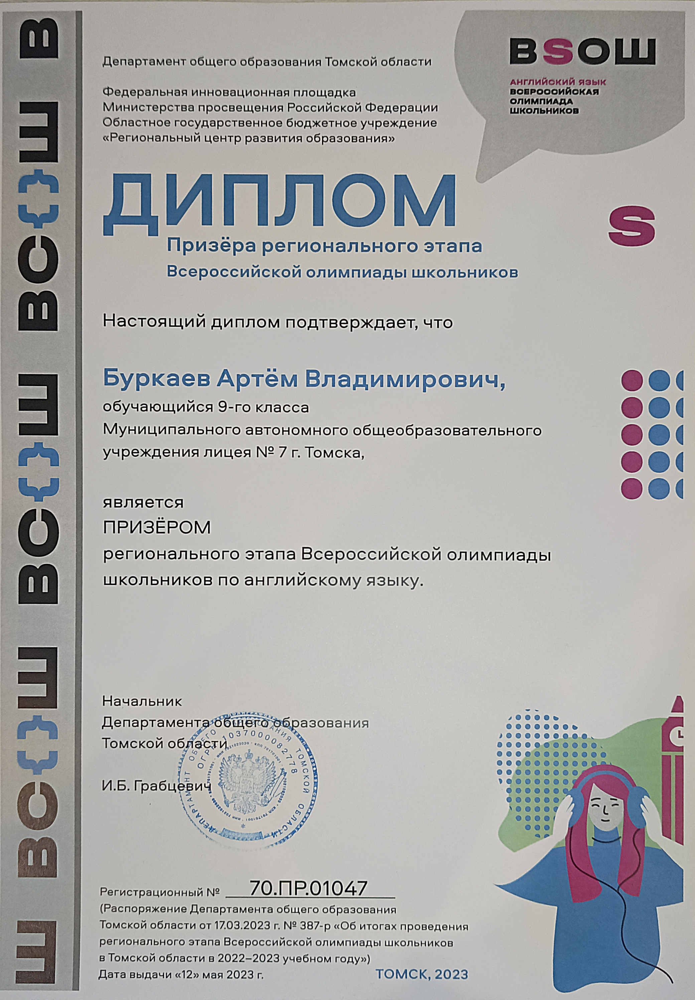
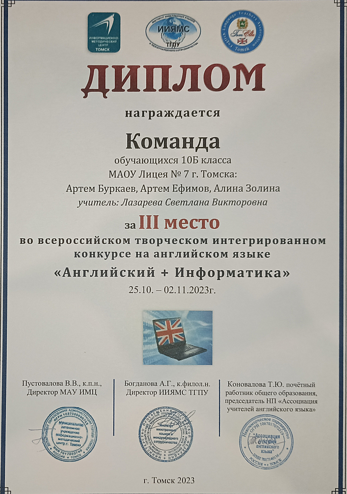
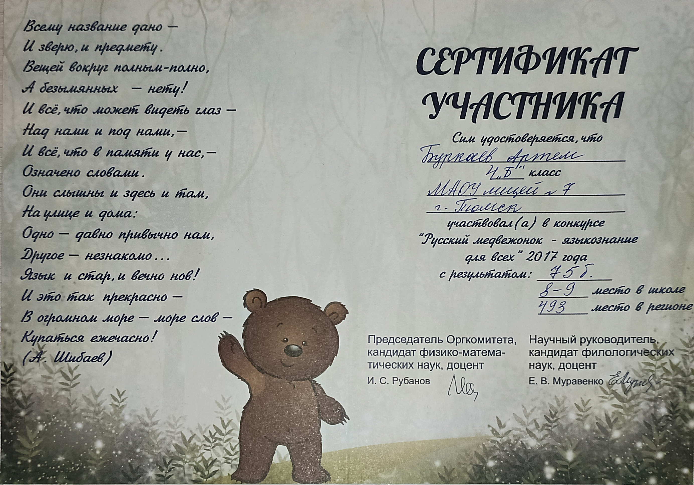

Grechkasoft Okna [Version 12.3.4567.89]
(c) Корпорация Гречкасофт (Grechkasoft Corporation). Все права защищены.
C:\Users\User>ArtemBurkaev.exe --certificates
[webcard-portfolio] loading...
[webcard-portfolio] done
---------- Дипломы и грамоты ----------

----- (Нажмите, чтобы увеличить) ------
C:\Users\User>ArtemBurkaev.exe --proj
[webcard-portfolio] loading...
[webcard-portfolio] done
---------- IT проект ----------
Кстати, меня есть скромный опыт командной разработки IT продуктов. В 9 классе, когда ещё не надо было готовиться в ЕГЭ, мы с моим другом Кириллом Колотовкиным в рамках школьного проекта решили сделать программу/приложение-тренажёр устного счёта. В то время мы оба только начали изучение языка Python, на нем и писали. Дальше циклов мы ещё не изучили, но нам этого хватило и за 4 итерации мы сделали рабочее приложение (хоть и без UI). Единственный нюанс - на практике у нас не было чёткого разделения обязанностей, каждый вносил идеи, реализовывал их; презентацию и документацию готовили тоже вместе.

C:\Users\User>ArtemBurkaev.exe --motiv
[webcard-motiv] ->Нажмите чтобы вернуться<-